| Characteristic | N = 2001 |
|---|---|
| Time taken (minutes) | 7.45 (5.65, 10.00) |
| Age (years) | 41.00 (34.00, 54.00) |
| Sex | |
| Female | 94 (47%) |
| Male | 106 (53%) |
| Ethnicity | |
| Asian | 20 (10%) |
| Black | 21 (11%) |
| Mixed | 12 (6%) |
| Other | 3 (2%) |
| White | 144 (72%) |
| Political affiliation | |
| Republican | 57 (29%) |
| Democrat | 87 (44%) |
| Independent | 51 (26%) |
| None | 4 (2%) |
| Other | 1 (1%) |
| Education level | |
| Undergraduate degree (BA/BSc/other) | 64 (32%) |
| Technical/community college | 40 (20%) |
| Graduate degree (MA/MSc/MPhil/other) | 22 (11%) |
| High school diploma/A-levels | 65 (33%) |
| Doctorate degree (PhD/other) | 6 (3%) |
| Secondary education (e.g. GED/GCSE) | 3 (2%) |
| Religious affiliation | |
| Buddhism | 4 (2%) |
| Christianity (e.g. Baptist, Church of England, Roman Catholic, Methodist, Jehovah Witness, etc.) | 99 (50%) |
| Do Not Wish to Answer | 4 (2%) |
| Hinduism | 3 (2%) |
| Islam | 1 (1%) |
| Judaism | 3 (2%) |
| Non Religious (e.g. Agnostic, Atheist, No Religion) | 74 (37%) |
| Other | 5 (3%) |
| Paganism | 1 (1%) |
| Spiritualism | 5 (3%) |
| Unitarianism | 1 (1%) |
| Political ideology | |
| Conservative | 62 (31%) |
| Liberal | 96 (48%) |
| Moderate | 39 (20%) |
| Other | 1 (1%) |
| N/A | 2 (1%) |
| 1 Median (Q1, Q3); n (%) | |
survey-pretest-analysis
Introduction
Existing literature indicates that a complex interplay of psychological factors—including fear of social isolation (Noelle-Neumann (1974); Chen (2018); Haug et al. (2025)), identity protection (Tajfel and Turner (1979); Hunter, Platow, and Howard (1996)), communication anxiety (Beatty (1987); Schulenberg et al. (2023)), and emotional dysregulation (Masters, Zimmer-Gembeck, and Farrell (2019); Aldao, Nolen-Hoeksema, and Schweizer (2010))—converge with sociocultural influences to deter open dialogue (Haug et al. (2025); Kahneman (2011); Lewandowsky, Ecker, and Cook (2017)). This avoidance is a significant barrier to constructive discourse. Understanding this phenomenon is critical for fostering democratic citizenship and cultivating inclusive learning environments.
We are developing an individual-level intervention to help increase Americans’ willingness to engage in conversations on divisive topics. To properly measure the barriers to engagement and assess the effectiveness of our intervention, we first designed a 19-item questionnaire to capture the core concerns that contribute to an individual’s reluctance to engage in conversations on controversial topics. This pretest study aims to assess the effectiveness of this 19-item questionnaire through addressing two primary preregistered research questions:
Comprehensiveness: Do the 19 items in our questionnaire capture the primary concerns that contribute to Americans’ unwillingness to engage in productive, open-minded discussions about divisive topics?
Structure: Are there any distinct, underlying factors that organize these 19 concerns?
Methods
Materials
We used custom software written with the jsPsych framework (Leeuw, Gilbert, and Luchterhandt (2023)) to create the study, which participants viewed and responded to via their personal laptops or desktops. The javascript code for the experiment and RStudio code for data analysis can both be found at (https://github.com/jodeleeuw/URSI-LLM-Convo-Bot/tree/main/pilot_1). Pre-registrations and all data for this study and previous pilots are available on the Open Science Framework at https://osf.io/x32pv.
Participants and Procedure
Through Prolific, we initially gathered data from 200 subjects. Participants were restricted to U.S. residents who fluently speak English. We excluded data from 0 subjects for failing the attention check question. The final cleaned sample consisted of 200 subjects. Participants completed the questionnaire in an average of 7.5 minutes (Range: 1.1 – 28.2).
Participants were first asked to rate their comfort level with 10 controversial topics. The topic that they were least willing to discuss was selected as their focus topic for the remainder of the survey. The full questionnaire included self-reported willingness to converse (via two slider questions from 0-100), self-reported open-mindedness (a 5-item Likert scale from 1-7), the 19-item concern inventory (a Likert scale from 1-7, along with an initial binary “Yes/No” endorsement). The session concluded with a free-response question about participants’ reasons for reluctance, which we will assess for any uncaptured reasons.
Results
Basic results
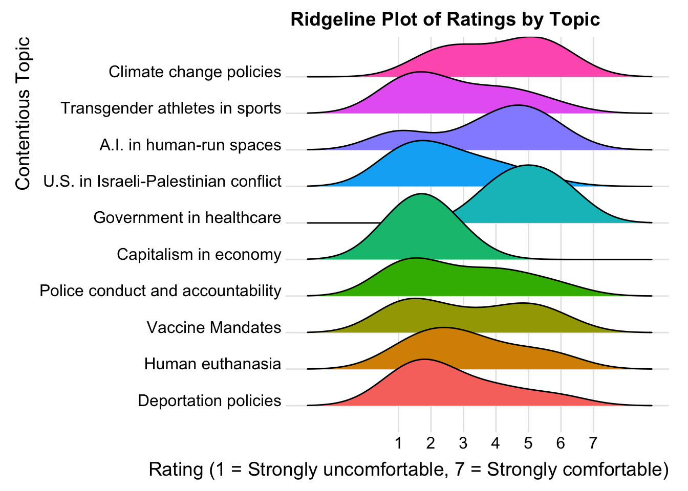
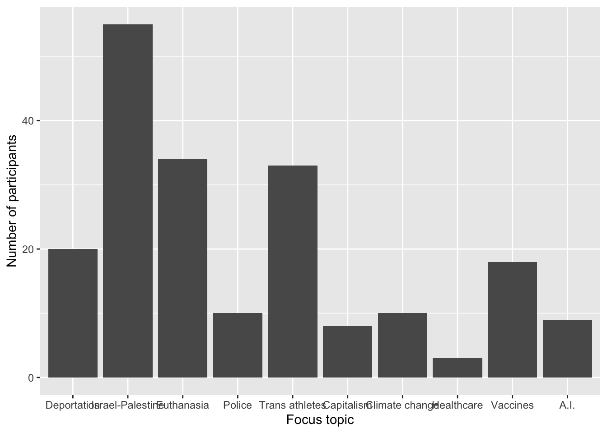
Our topic assignment method successfully generated a sample for whom engagement with their focus topic was a genuine concern. As shown in Figure @ref(fig: fig-topic-ratings-only-chosen-topics), the distribution of comfort ratings for the chosen topics was generally skewed below the neutral point of 4, validating the selection mechanism. Three of the ten topics—climate change policy, A.I. in human-run spaces, and government in healthcare—garnered many participants who were more willing than we had intended; however, these topics were also less popular (Figure @ref(fig: fig-bar-topic-counts).
Specifically, 5 participants were least willing to discuss climate change policies but still rated themselves as slightly to strongly comfortable discussing the topic, 8 participants were least willing to discuss human euthanasia but still rated themselves as slightly to strongly comfortable discussing the topic, and 4 participants were least willing to discuss A.I. in human-run spaces but still rated themselves as slightly to strongly comfortable discussing the topic. Overall, most participants focused on a topic that they were slightly to strongly uncomfortable discussing.
As shown in Figure @ref(fig: fig-bar-topic-counts), the majority of participants were least willing to discuss the role of the U.S. in the Israeli-Palestinian conflict, human euthanasia, and transgender athletes in sports.
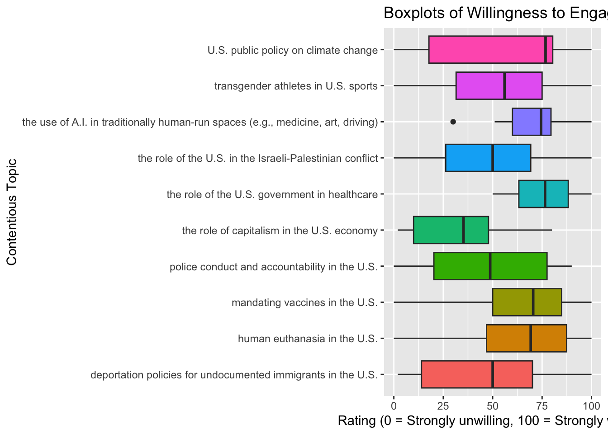
Separately from assigning focus topics, we asked participants to rate their willingness to discuss their focus topic with someone who strongly disagrees with them and with someone who would push back against their views. Participants used a slider ranging from 0 (absolute unwillingness) to 100 (absolute willingness) to respond, and we averaged the two responses to find participants’ average willingness. This assessment was quite similar to that of the topic selection question; however, we asked these questions separately to ensure quality of data (should probably expand on what I mean by quality data) and to use alternative phrasing that emphasized the potential divisiveness of the discussion.
Participants’ average willingness, shown in Figure @ref(fig:fig-box-plot-willingness), was widely spread with a notable density of participants reporting scores at or above the neutral point of 50. This is an unexpected contrast from participants’ responses in the earlier Likert-scale question; we had anticipated that the Likert-scale indicator of willingness and the average willingness seen here would indicate similar overall trends.
Warning: The `size` argument of `element_rect()` is deprecated as of ggplot2 3.4.0.
ℹ Please use the `linewidth` argument instead.
ℹ The deprecated feature was likely used in the likert package.
Please report the issue at <https://github.com/jbryer/likert/issues>.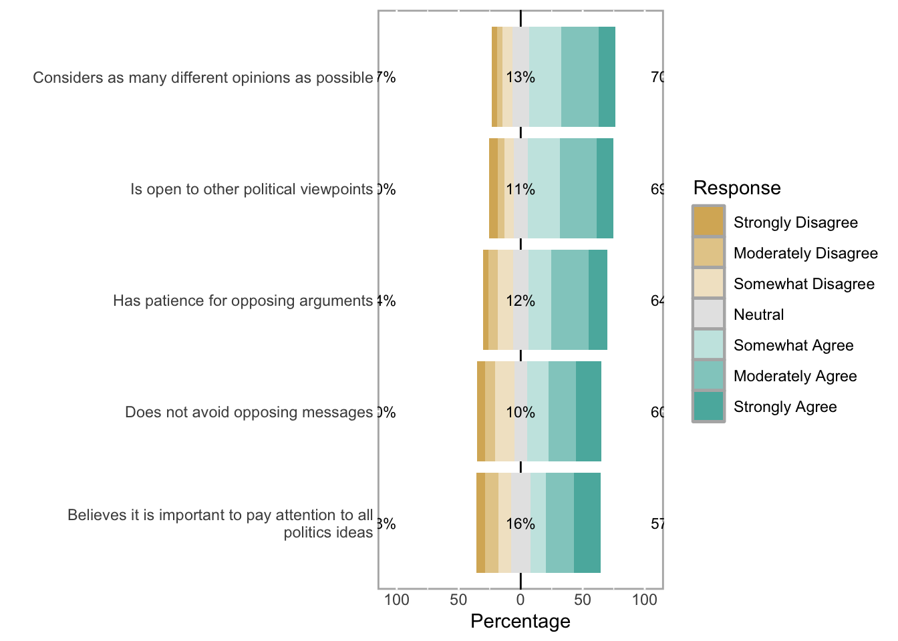
Subjects generally rated their open-mindedness quite high, as observed in Figure (ref?)(fig-openmindedness-likert-bar-plot).
| Free response | Focus topic |
|---|---|
| It's not worth my energy to try to push my ideas or beliefs onto someone else. They will believe what they want. | the role of the U.S. in the Israeli-Palestinian conflict |
| I would say it is not my place to discuss since my knowledge about the subject is only surface level, and I feel it would take more research to really begin to take a side in the conflict. | the role of the U.S. in the Israeli-Palestinian conflict |
| I didn't participate in a conversation at work. My coworkers were talking about if ICE should be taking away people. I stayed out of it. I felt uncomfortable talking about it at work. I didn't want to get in trouble from HR. | deportation policies for undocumented immigrants in the U.S. |
| Didnt have the energy to focus on it, the conversations tend to not go anywhere. | deportation policies for undocumented immigrants in the U.S. |
| I have never had the opportunity or chance to have any conversation with anyone regarding the Israeli-Palestinian conflict in any depth. Frankly, I don't feel at all concerned about it because we have problems here at home that need our attention. If you have time to be worrying about what's going on in another country, that's a privilege at this time. Our focus needs to be on the dystopian hell that our government is inflicting upon us and a never-ending religious conflict that has been going on for centuries that is unsolvable is not my concern. | the role of the U.S. in the Israeli-Palestinian conflict |
| I knew that it would start a very heated argument with the person I was discussing it with. They can get pretty angry and are very hard to talk to when you are trying to show other sides besides theirs. I didn't want to draw a wedge in that friendship, so i chose to halt the conversation. | police conduct and accountability in the U.S. |
Comprehensiveness of Concerns
To assess the comprehensiveness of the inventory, we analyzed the free-response data using LLMs with manual review on 10% of the sample for validation. We found that topic complexity/lack of knowledge, perceived lack of relevance, professional consequences, and emotional/cognitive bandwidth were not captured by our nineteen items. Additionally, we found that while the concerns that others’ views wouldn’t change or that personal relationships might get damaged were both nested within our items, their prevalence among the data may warrant us turning these concerns into their own items.
Topic complexity/lack of knowledge: These participants reported that they avoided conversations because they did not know enough about the topic to engage in a conversation about it. We have items that can capture fear or embarrassment about appearing to be uninformed, but not the pragmatic concern that an individual does not know enough. We plan to capture this with the new item: “I would feel like the topic is too complex or requires more knowledge than I have.”
Perceived lack of relevance: Some participants reported avoiding conversations because they felt that the topic was not personally relevant to them or that it was not their place to comment because they did not have first-hand experiences or were not affected by the topic. We do not have items that capture disinterest or an intentional ethical boundary, so we plan to capture this new area with the item: “I don’t have first-hand experience with the topic and/or it isn’t relevant to me.”
Professional consequences: Some participants reported avoiding conversations because they could have consequences in the workplace such as employment/HR problems, damaged professional standing, or workplace drama. We originally anticipated that workplace-related concerns would be captured by our social evaluation items; however, it is clear that consequences in the workplace can extend beyond the typical repercussions in other social contexts. We plan to capture this concern with the item: “I could experience significant repercussions at work or in other spaces beyond my personal social network.”
Emotional/cognitive bandwith: Many participants reported that it was not worth their energy to engage in these conversations. We originally excluded this concern because we anticipated that not wanting to expend energy is a product of other concerns that we may be able to more adequately target with our future intervention. However, the prevalence of this concern warrants its own item. We plan to capture this with the item: “It wouldn’t be worth the emotional and/or mental energy.”
Others’ views not changing: Some participants expressed that the conversation would be a waste of time because others’ views wouldn’t change. We have items about productivity, but this concern seems to be a more specific and commonly anticipated reason for why a conversation may be unproductive, so it may be worth turning this concern into its own item. We plan to capture it with the item: “It would be a waste of time because the others’ views wouldn’t change.”
Additionally, while we nested the concern about damaging personal relationships within an item about social repercussions, this concern was often discussed in a personal or intimate sense, distinguishing it from the more abstract or broad concept of social repercussions. Because of this, we plan to separate damaging personal relationships from our item about social repercussions. We will have one item be “I would not want to hurt my relationship(s) with others or upset them” and another be “I could incur social repercussions (e.g., being excluded by others in the future, negative changes to my reputation, feeling ostracized).”
In sum, we plan to add five new items to our questionnaire: “I would feel like the topic is too complex or requires more knowledge than I have,” “I don’t have first-hand experience with the topic and/or it isn’t relevant to me,” “I could experience significant repercussions at work or in other spaces beyond my personal social network,” “It wouldn’t be worth the emotional and/or mental energy,” and “I would not want to hurt my relationship(s) with others or upset them.”
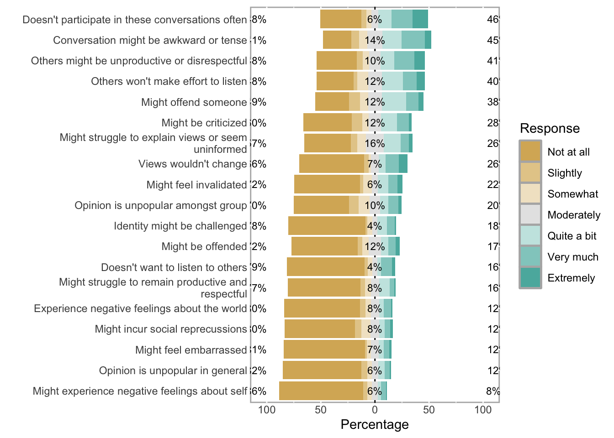
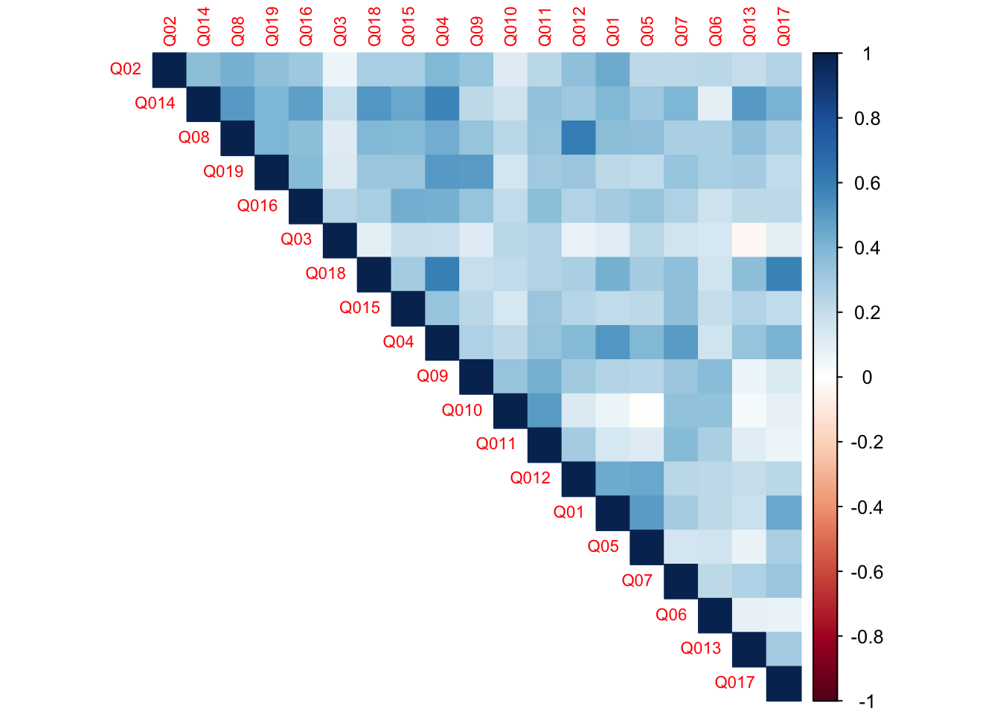
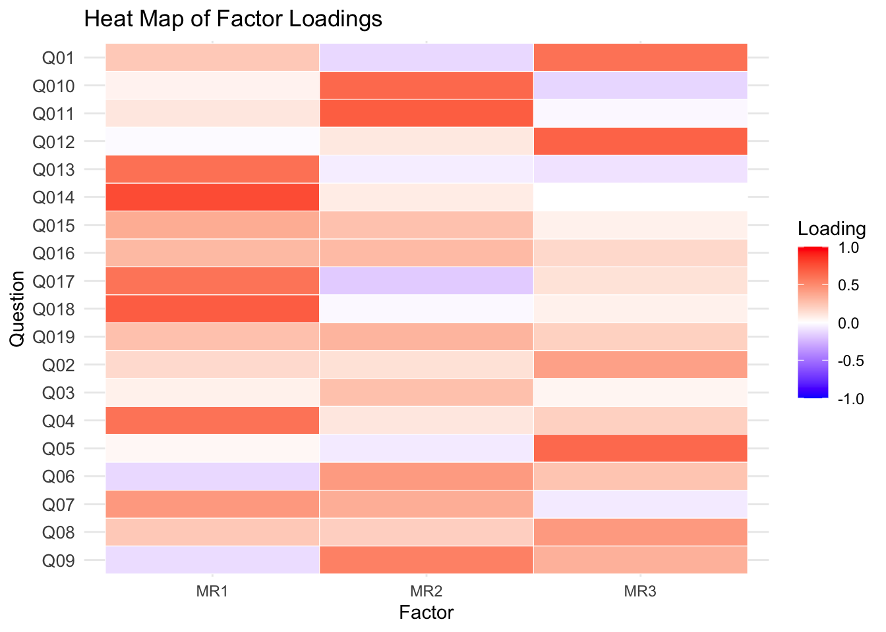
Factor Analysis on Concerns
We examined the initial binary endorsement ratings of our nineteen items where each participant simply indicated whether an item concerned them at all, as well as the Likert-scale ratings of how much each of the endorsed items impact the participant’s willingness. The top five most frequently endorsed concerns (answered “Yes”) were: ‘The conversation could negatively affect how I feel about myself during and/or afterward (e.g., fear, sadness, anger, vulnerability)’, ‘I could feel humiliated or embarrassed in the conversation’, ‘My opinion is unpopular in general.’, ‘I would not want to listen to the others discuss their views’, ‘Someone could challenge ideas or beliefs that play an important role in making me who I am’. The top five concerns most severely impacting willingness were “I don’t often participate in conversations like these”, “It would be a waste of time because my views wouldn’t change”, “I would not trust the others to keep the conversation productive and respectful (e.g., keeping emotions in check, refraining from making hostile remarks, not dominating the conversation)”, “I would not want to listen to the others discuss their views”, “The conversation could become awkward or tense”. The full distribution of severity ratings can be observed in Figure @ref(fig:fig-unwillingness-reason-likert-bar-plot).
We conducted an exploratory factor analysis (EFA) on the 19 concern items using oblimin rotation to identify latent factors that could reflect correlated concerns. Parallel analysis suggested a three-factor solution, which accounted for 41.2% of the total variance. The factors were moderately correlated (\(r\) = -0.03–0.6) as shown in Figure @ref(fig:tbl-correlation-matrix). Many cross-loadings were present, suggesting some conceptual overlap among factors. We retained all nineteen items to allow full examination of the emerging structure.
We interpret the the three factors, which are visualized in Figure (ref?)(fig:tbl-fa-heat-map-df), as:
Emotional Vulnerability/Identity Threat (Factor 1): This first factor consists of items focusing on internal psychological distress and threats to the participant’s self-concept or core beliefs. The items in this factor are: “I might take offense to what someone says,” “Someone could challenge ideas or beliefs that play an important role in making me who I am,” “I might feel disempowered, unheard, or invalidated,” “The conversation could negatively affect how I feel about myself during and/or afterward (e.g., fear, sadness, anger, vulnerability),” “Someone could criticize or show disapproval of my views,” and “The conversation could negatively affect how I feel about the world during and/or afterward.”
Conversational Efficacy/Unproductive Process (Factor 2): This factor captures concerns about the quality, utility, and worth of the interaction. The focus here is on whether the conversation will be respectful, worthwhile, or productive. This factor consists of: “I might struggle to remain productive and respectful,” “I would not trust the others to keep the conversation productive and respectful (e.g., keeping emotions in check, refraining from making hostile remarks, not dominating the conversation)”, “I would not want to listen to the others discuss their views”, and “It would be a waste of time because my views wouldn’t change.”
Social Evaluation/Reputation Risk (Factor 3): This factor emphasizes fear of external perception and broader social consequences. It emphasizes concern about how others perceive the participants, including fear of embarrassment, judgment, or negative social consequences. This factor consists of: “I could incur social repercussions (e.g., being excluded by others in the future, putting a strain on my relationships, negative changes to my reputation)”, “I would feel like my opinion is unpopular amongst the group,” “I could feel humiliated or embarrassed in the conversation,” “I might struggle to explain my views to the others and/or come across as uninformed,” “My opinion is unpopular in general.”
Four items did not load above 0.32 on any factor in the 3-factor solution nor in an additional exploratory 4-factor solution. These items were: “Someone might take offense to what I say,” “The conversation could become awkward or tense,” “The others might not make a full effort to hear and understand me,” and “I don’t often participate in conversations like these”. It would be expected that these items represent idiosyncratic concerns or situational/contextual items that don’t fit neatly into emotional vulnerability, process, or social evaluation; however, these items seem as though they would fit within the social evaluation factor [not sure what to make of this…].
It is also interesting that factors 1 and 3 are distinct from each other, as most of the items within these factors seem as though they could very well be interchangeable in the factors. For example, “I could feel humiliated or embarrassed in the conversation” fell within factor 3 with a loading of 0.6122329, but conceptually could very well fit within the emotional vulnerability concepts of factor 1 even though it had a loading within factor 1 of 0.2293928.
Correlations
Attaching package: 'gridExtra'The following object is masked from 'package:dplyr':
combine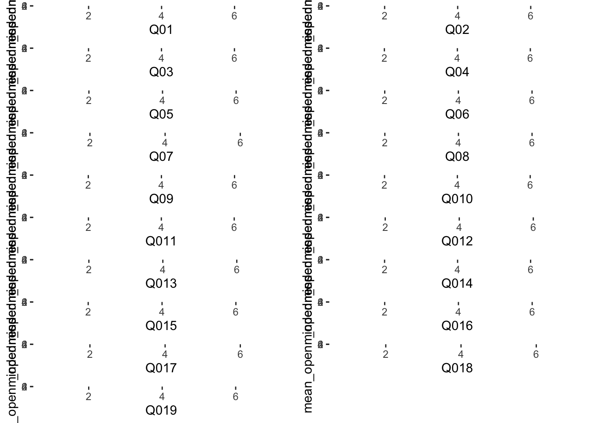
Accounting for the concerns that participants did not endorse as “not at all” impacting participants’ willingness, we found correlations between most willingness concerns and average open-mindedness. These relationships suggests that, for most willingness concerns, a greater impact of the concern on an American’s willingness is associated with a decrease in willingness to converse.
These concerns were “I could incur social repercussions (e.g., being excluded by others in the future, putting a strain on my relationships, negative changes to my reputation)” (\(r\) = -0.218, \(p\) = < 0.01), “Someone could criticize or show disapproval of my views” (\(r\) = -0.233, \(p\) = < 0.001), “I would feel like my opinion is unpopular amongst the group.” (\(r\) = -0.274, \(p\) = < 0.001), “The others might not make a full effort to hear and understand me” (\(r\) = -0.248, \(p\) = < 0.001), “I don’t often participate in conversations like these” (\(r\) = -0.187, \(p\) = < 0.01), “The conversation could negatively affect how I feel about the world during and/or afterward” (\(r\) = -0.265, \(p\) = < 0.001), “Someone might take offense to what I say” (\(r\) = -0.155, \(p\) = < 0.05), “I might feel disempowered, unheard, or invalidated” (\(r\) = -0.286, \(p\) = < 0.001), “I would not trust the others to keep the conversation productive and respectful (e.g., keeping emotions in check, refraining from making hostile remarks, not dominating the conversation)” (\(r\) = -0.296, \(p\) = < 0.001), “I would not want to listen to the others discuss their views” (\(r\) = -0.598, \(p\) = < 0.001), “It would be a waste of time because my views wouldn’t change” (\(r\) = -0.495, \(p\) = < 0.001), “My opinion is unpopular in general.” (\(r\) = -0.202, \(p\) = < 0.01), “I could feel humiliated or embarrassed in the conversation” (\(r\) = -0.171, \(p\) = < 0.05), “I might take offense to what someone says” (\(r\) = -0.364, \(p\) = < 0.001), “I might struggle to remain productive and respectful” (\(r\) = -0.304, \(p\) = < 0.001) and “The conversation could negatively affect how I feel about myself during and/or afterward (e.g., fear, sadness, anger, vulnerability)” (\(r\) = -0.197, \(p\) = < 0.01).
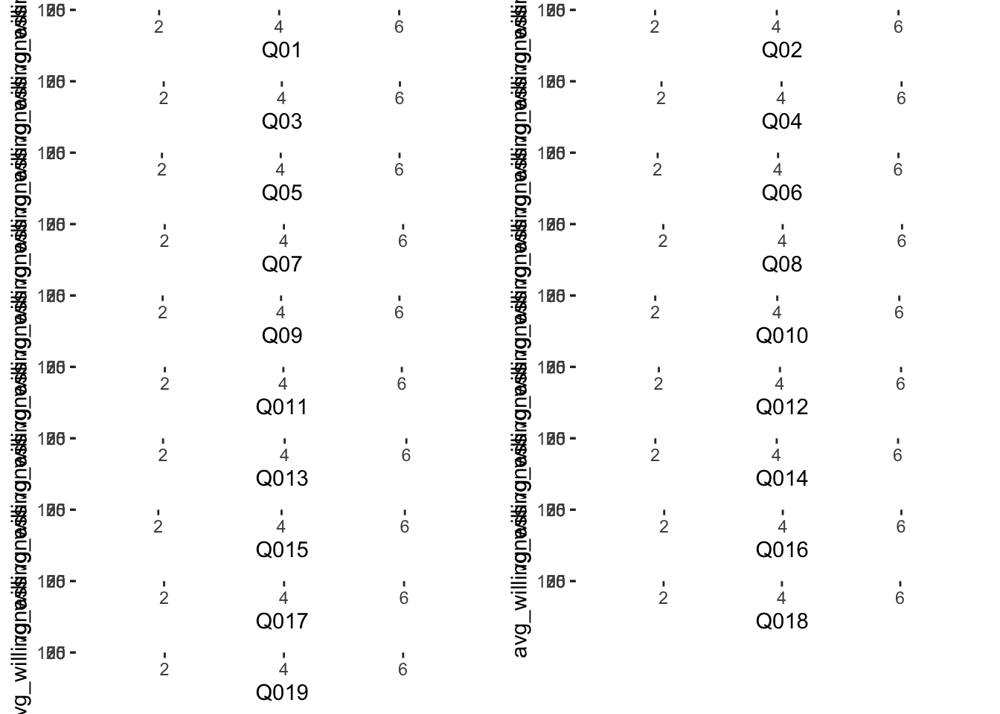
Next, we looked for correlations between each willingness concerns and average willingness as indicated by the two slider questions. Most concerns were negatively associated with willingness, suggesting that, for most of the willingness concerns, a greater impact of the concern on an American’s willingness is associated with lower willingness to engage.
These concerns were “Someone could criticize or show disapproval of my views” (\(r\) = -0.203, \(p\) = < 0.01), “I would feel like my opinion is unpopular amongst the group.” (\(r\) = -0.211, \(p\) = < 0.01), “The others might not make a full effort to hear and understand me” (\(r\) = -0.209, \(p\) = < 0.01), “The conversation could become awkward or tense” (\(r\) = -0.35, \(p\) = < 0.001), “I don’t often participate in conversations like these” (\(r\) = -0.385, \(p\) = < 0.001), “The conversation could negatively affect how I feel about the world during and/or afterward” (\(r\) = -0.214, \(p\) = < 0.01), “Someone might take offense to what I say” (\(r\) = -0.214, \(p\) = < 0.01), “I might feel disempowered, unheard, or invalidated” (\(r\) = -0.252, \(p\) = < 0.001), “I would not trust the others to keep the conversation productive and respectful (e.g., keeping emotions in check, refraining from making hostile remarks, not dominating the conversation)” (\(r\) = -0.355, \(p\) = < 0.001), “I would not want to listen to the others discuss their views” (\(r\) = -0.395, \(p\) = < 0.001), “It would be a waste of time because my views wouldn’t change” (\(r\) = -0.469, \(p\) = < 0.001), “I might struggle to explain my views to the others and/or come across as uninformed” (\(r\) = -0.218, \(p\) = < 0.01), “I might take offense to what someone says” (\(r\) = -0.252, \(p\) = < 0.001), “I might struggle to remain productive and respectful” (\(r\) = -0.206, \(p\) = < 0.01) and “The conversation could negatively affect how I feel about myself during and/or afterward (e.g., fear, sadness, anger, vulnerability)” (\(r\) = -0.168, \(p\) = < 0.05).
Cluster analysis
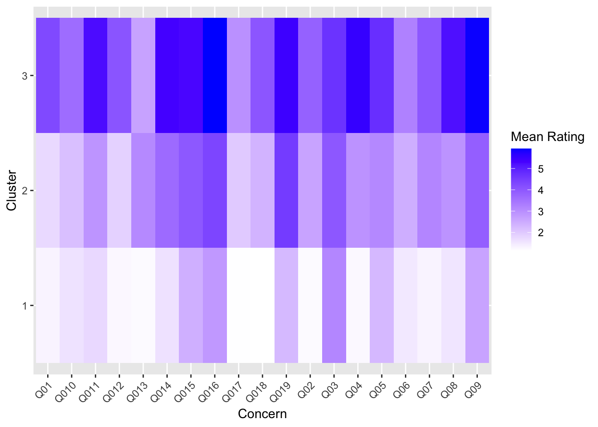
We also conducted cluster analysis on the 19 concerns to determine whether participants generally fell into certain categories. The analysis suggested that participants generally fell into one of three clusters, with 52% of participants falling into Cluster 1, 33.5% of participants falling into Cluster 2, and 14.5% of participants falling into Cluster 3.
As shown in Figure @ref(fig:heat-map-clusters-willingness-concerns), the clusters appear to arrange participants by the overall impact of the concerns on willingness. Cluster 2 is the low impact group, Cluster 1 is the moderate impact group, and Cluster 3 is the high impact group. It is notable that half of our sample fell into low impact group, meaning about half of our sample felt that most to all of the concerns did not strongly impact their willingness. This could reflect weakness of our questionnaire or it could mean that half of our participants are simply not as concerned as the other half of our sample. The latter would be consistent with Cluster 2’s greater average willingness and open-mindedness; although, recalling that willingness and open-mindedness were also self-reported, the trio might also reflect an overall weakness of gathering this data through self reports.
Cluster 1’s average rating of a given concern was 2. On average, Cluster 1 rated the following concerns the highest: .
Cluster 2’s average rating of a given concern was 3.2. On average, cluster 2’s top concerns were ‘Someone could challenge ideas or beliefs that play an important role in making me who I am’.
Cluster 3’s average rating of a given concern was 4.9. On average, cluster 3’s top concerns were “The conversation could become awkward or tense”; “I would not trust the others to keep the conversation productive and respectful (e.g., keeping emotions in check, refraining from making hostile remarks, not dominating the conversation)”; “I might feel disempowered, unheard, or invalidated”; “The others might not make a full effort to hear and understand me”; “Someone could criticize or show disapproval of my views”; “Someone might take offense to what I say”; “It would be a waste of time because my views wouldn’t change”; “I would feel like my opinion is unpopular amongst the group.”; “I might struggle to explain my views to the others and/or come across as uninformed”; “I don’t often participate in conversations like these”; “I could feel humiliated or embarrassed in the conversation”; “My opinion is unpopular in general.”; “The conversation could negatively affect how I feel about the world during and/or afterward”; “I might take offense to what someone says”; “I could incur social repercussions (e.g., being excluded by others in the future, putting a strain on my relationships, negative changes to my reputation)”; “I would not want to listen to the others discuss their views”; “I might struggle to remain productive and respectful”; “The conversation could negatively affect how I feel about myself during and/or afterward (e.g., fear, sadness, anger, vulnerability)”.
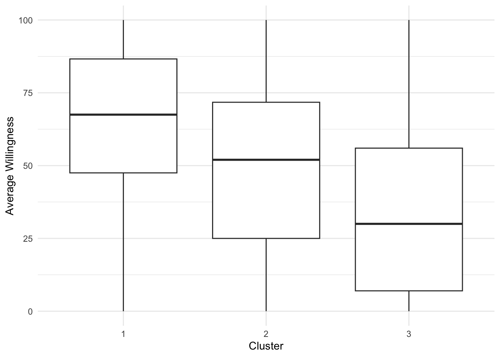
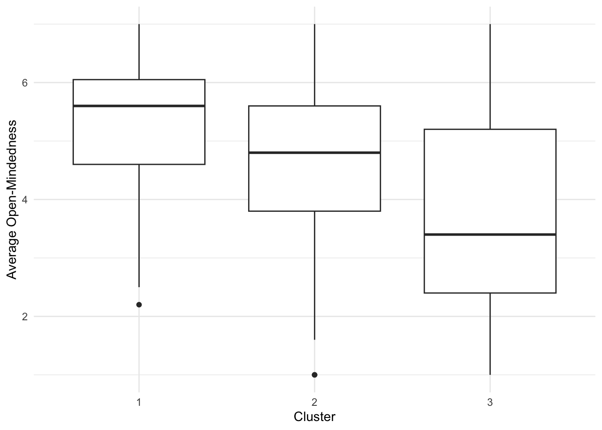
As shown in Figure @ref(fig:fig-clusters-avg-willingness), the willingness of each cluster aligns with the impact of concerns, with Cluster 2 reporting the greatest willingness and Cluster 3 reporting the least willingness. Similarly, as shown in Figure @ref(fig:fig-clusters-avg-openmindedness), Cluster 2 reported the highest open-mindedness and Cluster 3 reported the least open-mindedness. These interpretations have not been rigorously assessed and, again, it should be recalled that these data were self-reported.
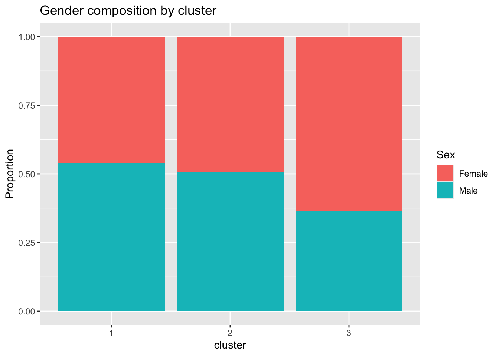
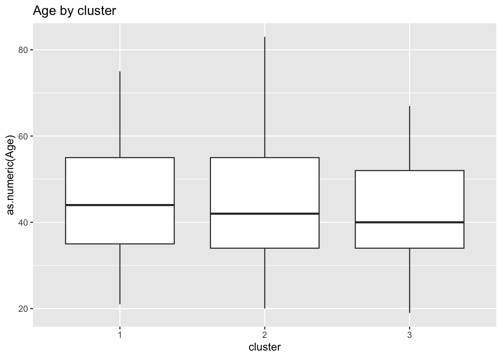
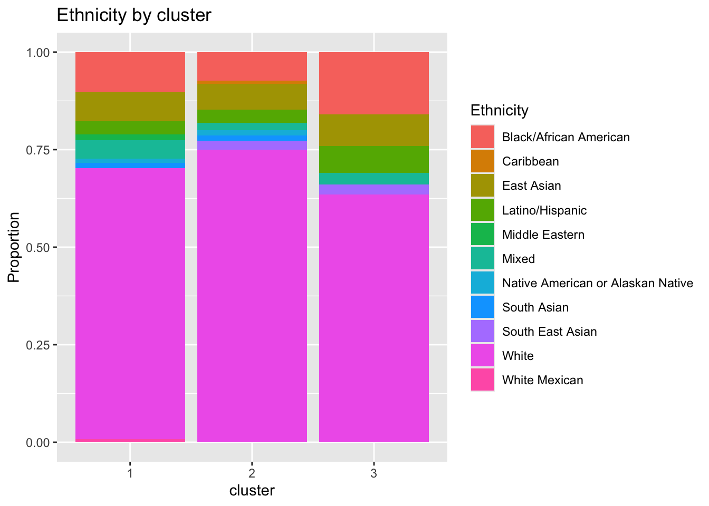
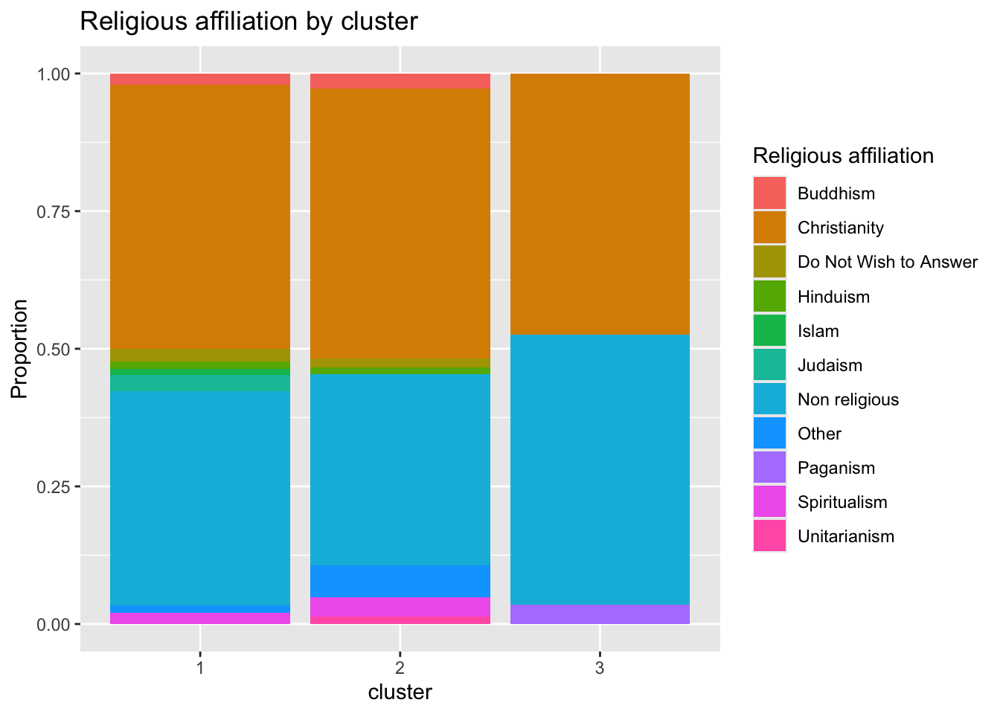
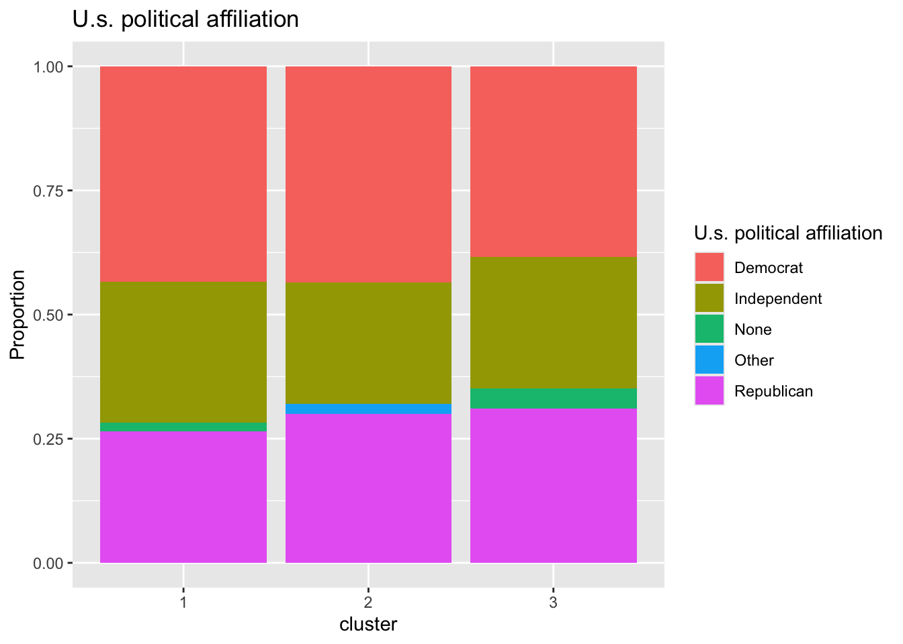
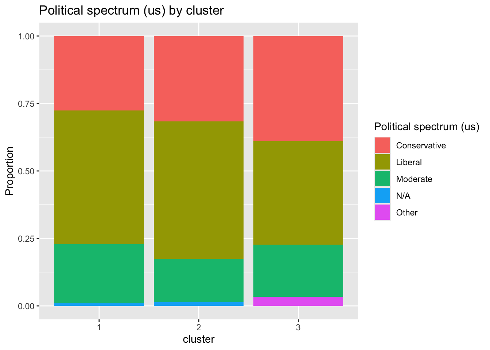
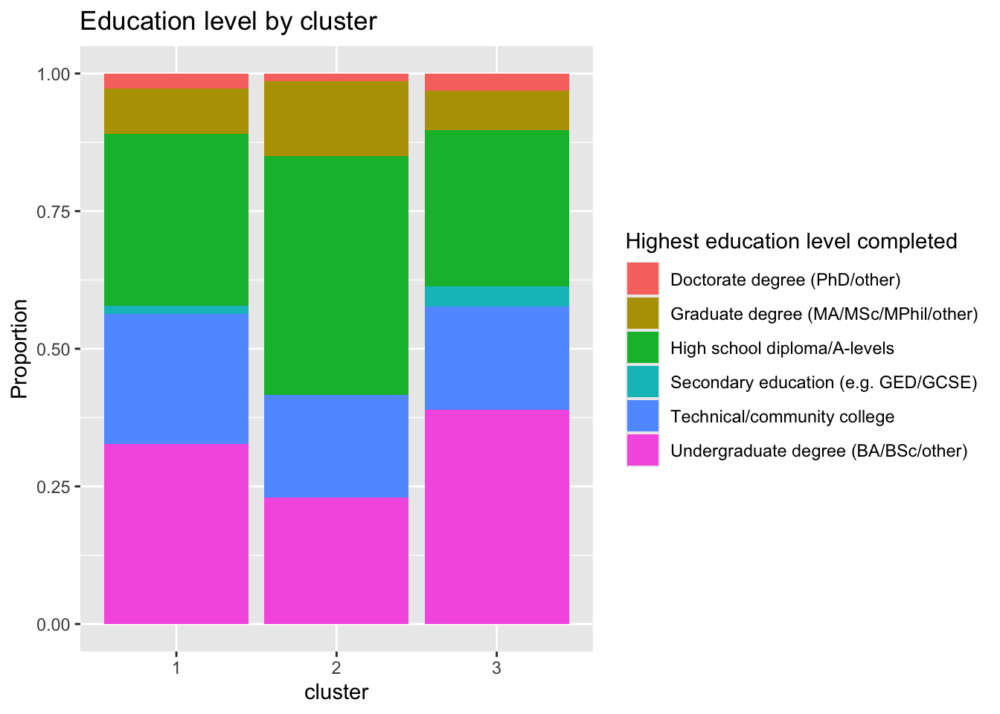
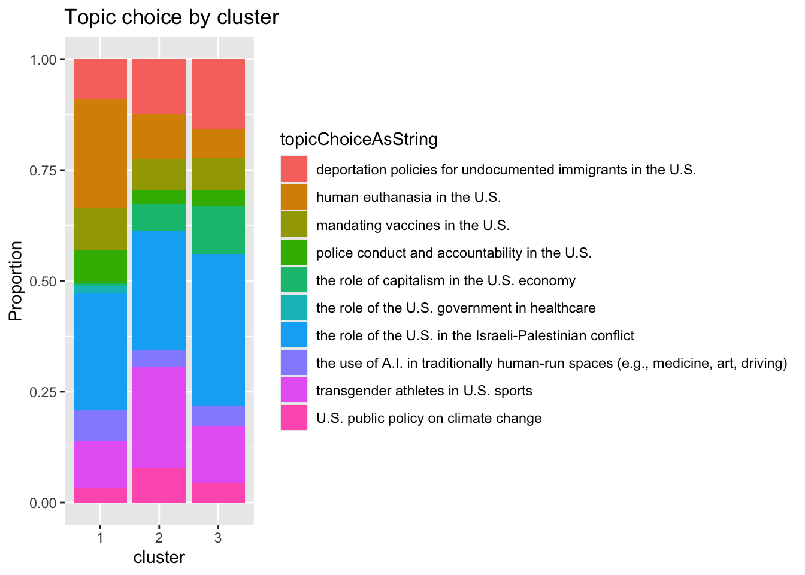
There may be significant differences in the demographic profiles of the clusters as shown in Figure @ref(fig:fig-demographics-clusters); however, further analyses would need to assess statistical significance. [i ran some out of curiosity but didn’t bother to report here because it’s probably not useful enough to be worth digesting the extra information]
Consistent with Figure (ref?)(fig: fig-topic-choice-clusters), a chi-square test of cluster and focus topic revealed a significant association, χ²(20, 200) = 205.8354936, p < < 0.001.
Standardized residuals indicated that participants in Cluster 1 disproportionately focused on human euthanasia, healthcare, police conduct, A.I., and mandating vaccines. These participants were significantly less likely to focus on deportation policies, capitalism, transgender athletes in sports, climate change, or the Israeli-Palestinian conflict. Cluster 2 disproportionately focused on transgender athletes in sports, climate change, capitalism, and deportation policies. These participants were significantly less likely to focus on human euthanasia, healthcare, police conduct, A.I., or mandating vaccines. Participants in Cluster 3 disproportionately focused on capitalism, deportation policies, and the role of the U.S. in the Israeli-Palestinian conflict. These participants were significantly less likely to focus on human euthanasia, healthcare, transgender athletes in sports, police conduct, or climate change.
Discussion
This pretest study aimed to assess the comprehensiveness and underlying structure of a newly developed 19-item questionnaire designed to capture the core concerns contributing to Americans’ unwillingness to engage in open, productive discussions on divisive topics. Our findings validate the instrument’s relevance and offer a preliminary structural framework, while also highlighting key areas for refinement.
Comprehensiveness of Concerns
Our first objective was to determine if the 19-item inventory comprehensively captured the reasons for reluctance to engage. Through a qualitative analysis of participants’ free-response explanations for avoiding difficult conversations, we found that our items captured the majority of concerns but failed to capture pragmatic barriers and concerns about energy and relevance.
Specifically, participants frequently cited topic complexity/lack of knowledge as a barrier, not just fearing embarrassment, but a practical inability to engage due to insufficient information. We also found concerns about the perceived lack of relevance of the topic to the participant’s personal life or ethical boundaries against speaking on issues outside of their firsthand experience. Furthermore, many expressed that it simply wouldn’t be worth their emotional and/or mental energy.
In addition to these new constructs, our analysis revealed that two existing concepts warranted separation from the items in which they had been nested due to their high prevalence and distinct nature in the free responses. The first, damaging personal relationships, was often discussed in an intimate, personal sense that distinguished it from the broader concept of “social repercussions”. The second, others’ views not changing, was common enough to be separated from the general item about others causing the conversation to not be productive.
Based on these results, we plan to add six new items to enhance the questionnaire’s comprehensiveness and construct validity. These items are
Structure of Concerns
Our second objective was to explore the latent structure of the 19 concerns. An Exploratory Factor Analysis (EFA) suggested a three-factor solution, which accounted for 41.2% of the total variance. These factors were conceptually labeled as:
Emotional Vulnerability/Identity Threat (Factor 1): Concerns centered on internal psychological distress, such as negative feelings about the self or the world, and direct challenges to core beliefs or identity.
Conversational Efficacy/Unproductive Process (Factor 2): Concerns focusing on the quality, respectfulness, and utility of the interaction, particularly whether the process would be a waste of time or devolve into disrespect.
Social Evaluation/Reputation Risk (Factor 3): Concerns emphasizing external social perception, fear of embarrassment, public disapproval, and broader social consequences.
The factors were moderately correlated (\(r\) = 0.17–0.60) and exhibited some cross-loadings, suggesting conceptual overlap and the utility of an oblique rotation (oblimin). Importantly, four items failed to load strongly on any factor, indicating they may represent highly idiosyncratic or situational concerns, though some conceptually belong to the Social Evaluation factor (e.g., “The conversation could become awkward or tense”).
The structural distinction between Factor 1 (internal, emotional threat) and Factor 3 (external, social risk) is noteworthy, as many items seem conceptually close (e.g., “I could feel humiliated or embarrassed in the conversation” loaded on Factor 3 but relates to emotional vulnerability).
Relationships to Willingness and Open-Mindedness
Our correlation analyses provide initial construct validation for our survey. A greater impact of most concerns was significantly associated with lower self-reported willingness to converse about the chosen topic, as measured by our slider questions.
Furthermore, most concerns were also negatively correlated with participants’ open-mindedness. This suggests that individuals who feel more impacted by the various barriers to engagement also tend to rate themselves as less open-minded, which aligns with the literature suggesting that psychological and social anxieties inhibit constructive discourse.
Cluster Analysis
Our \(k\)-means cluster analysis suggested that participants’ willingness concerns generally fell into one of three distinct clusters that were differentiated by the strength of the concerns’ impacts on their willingness.
Cluster 2, the low impact group, comprised 33.5% of our sample. Correspondingly, they also reported the highest average willingness and open-mindedness. Cluster 1, the moderate impact group, comprised 52% of our sample. Cluster 3, the high impact group, comprised 14.5% of our sample and reported the lowest average willingness and open-mindedness.
This clear differentiation by willingness and open-mindedness provides further evidence of the questionnaire’s ability to segment individuals based on their barriers to engagement.
A particularly interesting finding is the significant association between cluster membership and the participant’s chosen focus topic. For example, Cluster 2 (Low Impact) was disproportionately focused on topics like transgender athletes in sports and climate change, whereas Cluster 3 (High Impact) disproportionately focused on issues like capitalism, deportation policies, and the Israeli-Palestinian conflict. This suggests that the topic itself may be linked to the level of perceived threat and concern, which should be taken under consideration in the development of interventions for increasing willingness.
Limitations and Future Directions
The primary limitation of this study is the reliance on self-report measures for all key variables (concerns, willingness, and open-mindedness). The discrepancy between the Likert-scale comfort ratings and the slider-based willingness ratings (both asked about the focus topic), for example, highlights the inherent difficulties in measuring these constructs. Future work should integrate behavioral or implicit measures to provide a more objective assessment.
The EFA, while providing a clear structure, did not result in perfectly clean factors, as evidenced by cross-loadings and items that failed to load strongly. The six new items proposed for inclusion must be validated through a second factor analysis to confirm the underlying structure and assess the potential for developing subscales from the resulting factors.
In conclusion, this pretest confirms that the 19-item questionnaire, particularly with the proposed additions, is a valuable tool for measuring the multifaceted barriers to productive discourse on divisive topics. The identified factor structure and participant clusters will be crucial for tailoring our individual-level intervention to specifically address the emotional, efficacy, and social concerns that drive an American’s unwillingness to engage.
References
Aldao, Amelia, Susan Nolen-Hoeksema, and Susanne Schweizer. 2010. “Emotion-Regulation Strategies Across Psychopathology: A Meta-Analytic Review.” Clinical Psychology Review 30 (2): 217–37.
Beatty, M. J. 1987. “Communication Apprehension as a Determinant of Avoidance, Withdrawal and Performance Anxiety.” Communication Quarterly 35 (2): 202–17.
Chen, Hsuan-Ting. 2018. “Spiral of Silence on Social Media and the Moderating Role of Disagreement and Publicness in the Network.” New Media & Society 20 (12): 4596–616.
Elnakouri, Abdo, Alex C. Huynh, and Igor Grossmann. 2024. “Explaining Contentious Political Issues Promotes Open-Minded Thinking.” Cognition 247: 105769. https://doi.org/10.1016/j.cognition.2024.105769.
Haug, M., C. Maier, H. Gewald, and T. Weitzel. 2025. “Supporting Opinions to Fit in: A Spiral of Silence-Theoretic Explanation of Online Self-Censorship.” Internet Research 35 (1).
Hunter, J. A., M. J. Platow, and M. L. Howard. 1996. “Social Identity and Intergroup Evaluative Bias: Realistic Categories and Domain Specific Self-Esteem in a Conflict Setting.” European Journal of Social Psychology 26: 631–48.
Kahneman, Daniel. 2011. Thinking, Fast and Slow. Farrar, Straus; Giroux.
Leeuw, Joshua R. de, Ryan A. Gilbert, and Benjamin Luchterhandt. 2023. “jsPsych: Enabling an Open-Source Collaborative Ecosystem of Behavioral Experiments.” Journal of Open Source Software 8 (85): 5351. https://doi.org/10.21105/joss.05351.
Lewandowsky, Stephan, Ullrich K. H. Ecker, and John Cook. 2017. “Beyond Misinformation: Understanding and Coping with the ‘Post-Truth’ Era.” Journal of Applied Research in Memory and Cognition 6: 353–69.
Masters, M. R., M. J. Zimmer-Gembeck, and L. J. Farrell. 2019. “Transactional Associations Between Adolescents’ Emotion Dysregulation and Symptoms of Social Anxiety and Depression.” Journal of Early Adolescence 39 (4): 492–515.
Noelle-Neumann, Elisabeth. 1974. “The Spiral of Silence: A Theory of Public Opinion.” Journal of Communication 24 (2): 43–51.
Schulenberg, T. et al. 2023. “Exploring Communication Apprehension in Nursing and Healthcare Education: A Scoping Review.” Nursing & Health Sciences 25: 130–45.
Tajfel, Henri, and John C. Turner. 1979. “An Integrative Theory of Intergroup Conflict.” In The Social Psychology of Intergroup Relations, edited by William G. Austin and Stephen Worchel, 33–47. Brooks/Cole.